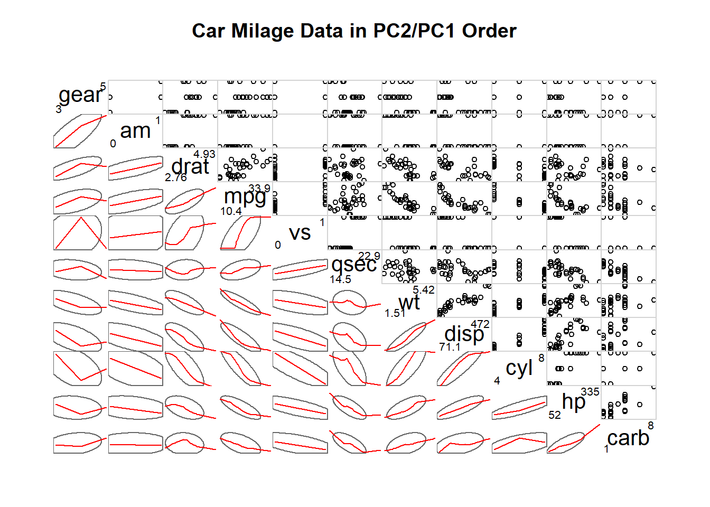
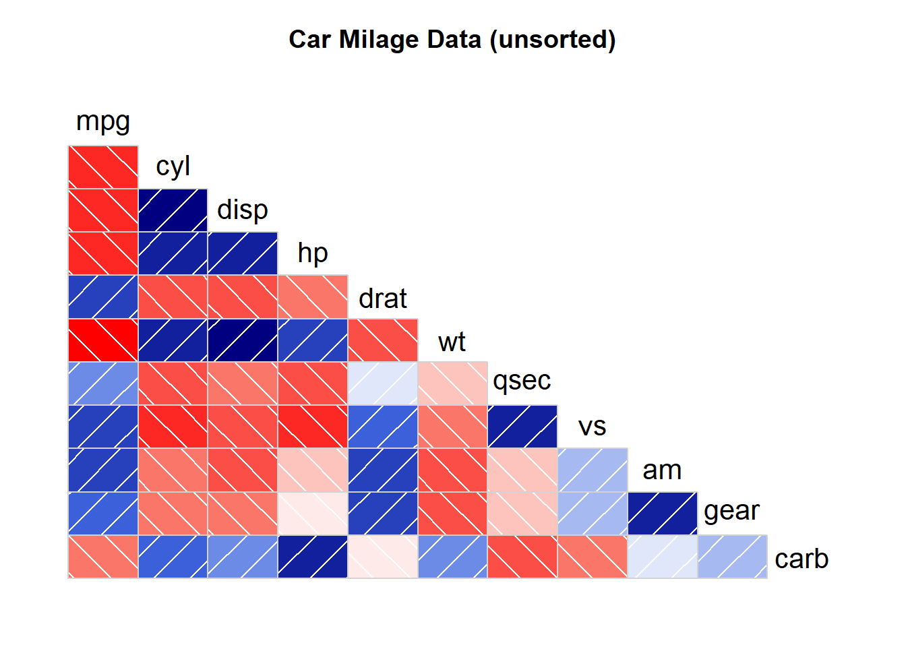
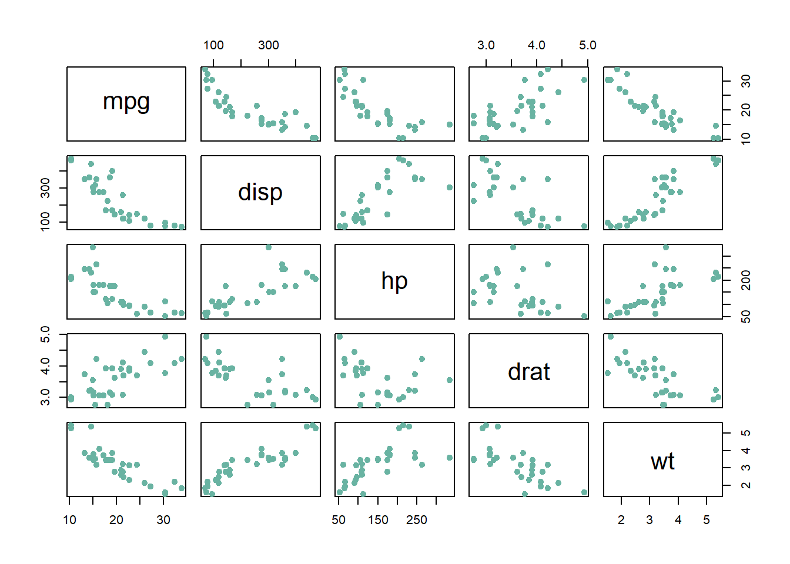

Show/Hide Code
library(GGally)
library(tidyverse)
library(corrgram) # 相关性图
library(ellipse) # 椭圆
library(RColorBrewer) # 调色板
library(car) # 线性回归诊断GGally::ggpairs() 可以绘制好看的相关性图：
library(GGally)
library(tidyverse)
library(corrgram) # 相关性图
library(ellipse) # 椭圆
library(RColorBrewer) # 调色板
library(car) # 线性回归诊断ggpairs()# 构造示例数据
data <- data.frame(
v1 = 1:100 + rnorm(100, sd = 20),
v2 = 1:100 + rnorm(100, sd = 27),
v3 = rep(1, 100) + rnorm(100, sd = 1)
)
data$v4 = data$v1**2
data$v5 = -(data$v1**2)
# 绘图
ggpairs(data, title = "correlogram with ggpairs()")通过 ggpairs() 的 mapping 参数可以指定不同的美学映射，从而实现分组绘图：
# 使用了color参数
ggpairs(flea, columns = 2:4, aes(colour=species)) 带有颜色的 ggpairs() 相关性图，非常美观：
ggpairs(
mtcars[, c(1, 3:7)],
columnLabels = c(
"Miles",
"Displacement",
"Horsepower",
"Rear axle ratio",
"Weight",
"1/4 mile time"
),
# 这里将 mtcars$vs 转换为因子，作为分组变量上色
aes(color = factor(mtcars$vs)), # <--- 主要修改在这里
# 上三角显示相关系数
upper = list(continuous = wrap('cor', size = 3)),
# 下三角显示分组直方图
lower = list(combo = wrap("facethist", bins = 30)),
# 对角线显示密度图
diag = list(continuous = wrap("densityDiag", alpha = 0.5)),
# 图标题
title = "Scatterplot matrix of `mtcars` Grouped by Engine"
)
upper、lower 和 diag 参数修改图的类型
# 使用 ggpairs() 并通过 upper、lower 参数自定义图的类型
ggpairs(
reshape::tips[, c(1, 3, 4, 2)],
# 上三角连续型变量用密度图，组合型用无分面箱线图
upper = list(continuous = "density", combo = "box_no_facet"),
# 下三角连续型变量用散点图，组合型用无分面点图
lower = list(continuous = "points", combo = "dot_no_facet")
)
ggcorr()ggcorr() 可以绘制一种朴素的相关性图
# data是之前构建的数据
ggcorr(data, method = c("everything", "pearson"))corrgram()# 第一种：下三角为色块，上三角为饼图，主对角线为变量名
corrgram(
mtcars,
order = TRUE,
lower.panel = panel.shade, # 下三角用色块表示相关性
upper.panel = panel.pie, # 上三角用饼图表示相关性
text.panel = panel.txt, # 主对角线显示变量名
main = "Car Milage Data in PC2/PC1 Order"
) # 第二种：下三角为椭圆，上三角为点图，对角线为极值
corrgram(
mtcars,
order = TRUE,
lower.panel = panel.ellipse, # 下三角用椭圆表示相关性
upper.panel = panel.pts, # 上三角用点图表示相关性
text.panel = panel.txt, # 主对角线显示变量名
diag.panel = panel.minmax, # 对角线显示极值
main = "Car Milage Data in PC2/PC1 Order"
) 
# 第三种：下三角为色块，上三角不显示，主对角线为变量名，不排序
corrgram(
mtcars,
order = NULL,
lower.panel = panel.shade, # 下三角用色块表示相关性
upper.panel = NULL, # 上三角不显示
text.panel = panel.txt, # 主对角线显示变量名
main = "Car Milage Data (unsorted)"
)
# library(ellipse) # 椭圆包
# library(RColorBrewer) # 调色板包
# 计算 mtcars 数据集的相关系数矩阵
data <- cor(mtcars) # 计算相关系数矩阵
# 用 RColorBrewer 构建 100 个颜色的调色板
my_colors <- brewer.pal(5, "Spectral") # 选择5种“Spectral”配色
my_colors <- colorRampPalette(my_colors)(100) # 插值生成100种颜色
# 对相关系数矩阵进行排序（这里以第一行相关性为依据排序）
ord <- order(data[1, ]) # 获取排序索引
data_ord <- data[ord, ord] # 按排序索引重新排列矩阵
# 绘制椭圆相关性图
plotcorr(
data_ord, # 排序后的相关系数矩阵
col = my_colors[data_ord * 50 + 50], # 根据相关系数映射颜色
mar = c(1, 1, 1, 1) # 设置图形边距
)plot() 可以绘制散点图矩阵：
# 选择 mtcars 数据集的第1、3、4、5、6列，构建数据框
data <- mtcars[, c(1, 3:6)]
# 绘制散点图矩阵
# pch = 20 表示点的形状为实心圆
# cex = 1.5 表示点的大小为1.5倍
# col = "#69b3a2" 设置点的颜色为绿色系
plot(data, pch = 20, cex = 1.5, col = "#69b3a2")
car::scatterplotMatrix() 可以绘制分组散点图矩阵：
# 使用 R 自带的 mtcars 数据集
data <- mtcars
# 根据气缸数（cyl）生成调色板
my_colors <- brewer.pal(nlevels(as.factor(data$cyl)), "Set2")
# 绘制分组散点图矩阵
scatterplotMatrix(
~ mpg + disp + drat | cyl, # 选择 mpg、disp、drat 三个变量，并按 cyl 分组
data = data, # 数据来源
reg.line = "", # 不添加回归线
smoother = "", # 不添加平滑曲线
col = my_colors, # 设置分组颜色
smoother.args = list(col = "grey"), # 平滑曲线颜色（虽然未用到）
cex = 1.5, # 点的大小
pch = c(15, 16, 17), # 不同分组的点形状
main = "按气缸数分组的散点图矩阵" # 图标题
)